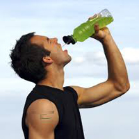
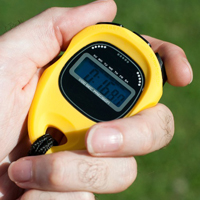

O consumo adequado de líquidos antes, durante e depois a prática de uma atividade física é uma prática nutricional de fundamental...
leia+
É muito importante para o seu bom desempenho, fazer uma periodização de treinamentos com objetivos bem definidos e metas que deverão ser...
leia+
Um acessório indispensável no dia a dia e na prática esportiva é o tênis. Escolher um bom tênis não é uma tarefa assim tão simples...
leia+

#CorridaDeRua Copyright 2023, Todos osdireitos reservados.